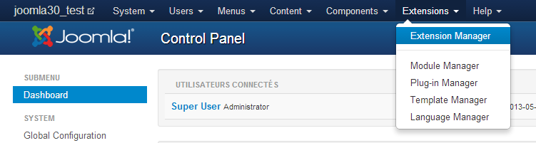
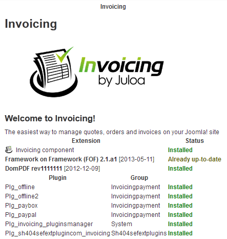

Once invoicing has been purchased and downloaded, the component can be installed like any other Joomla component.
If you have purchase a sivler or gold pack of AdsManager, to access the zip folder of Invoicing, you need to unzip the file you just download, the component will be inside it.
Go to the 'Extensions' menu and choose 'Extension Manager'
Choose the installer file in the first field and choose Upload & Install.
The component, modules and plugins will be automatically installed. Once installed you should see this view:
